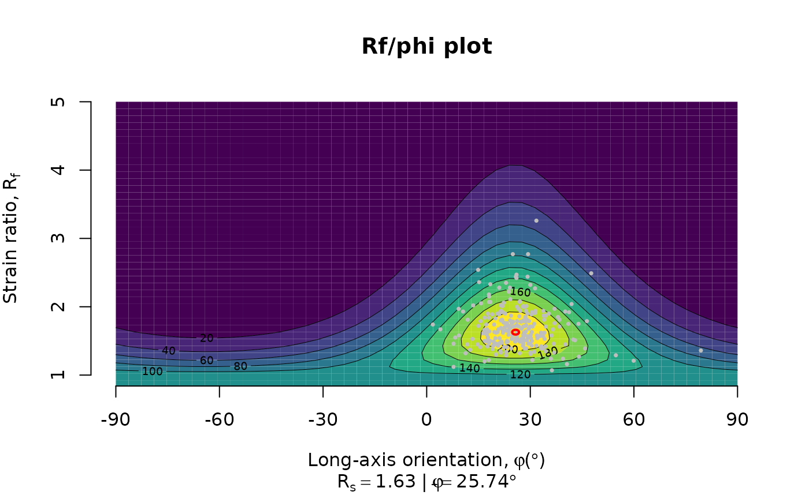
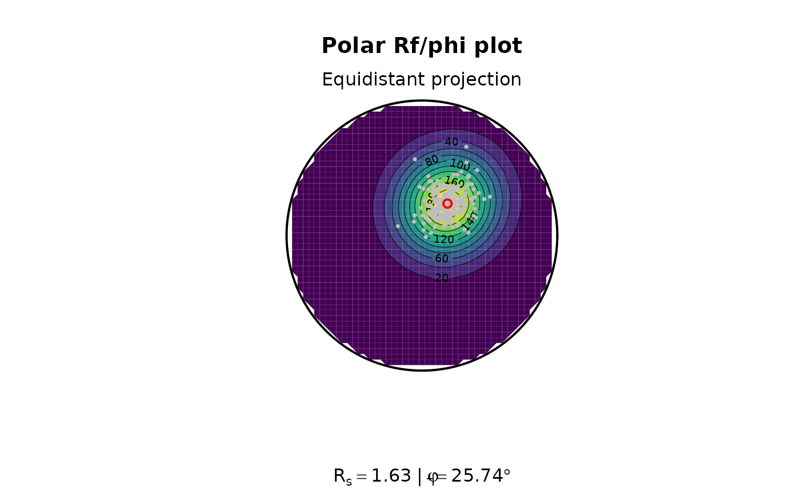
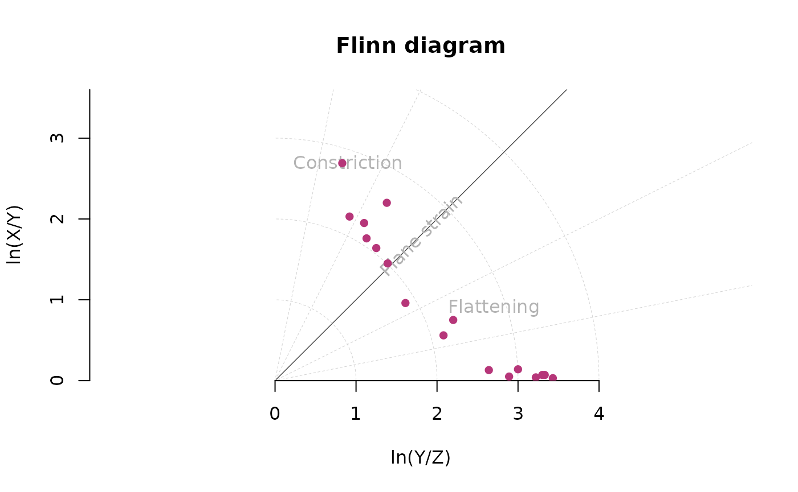
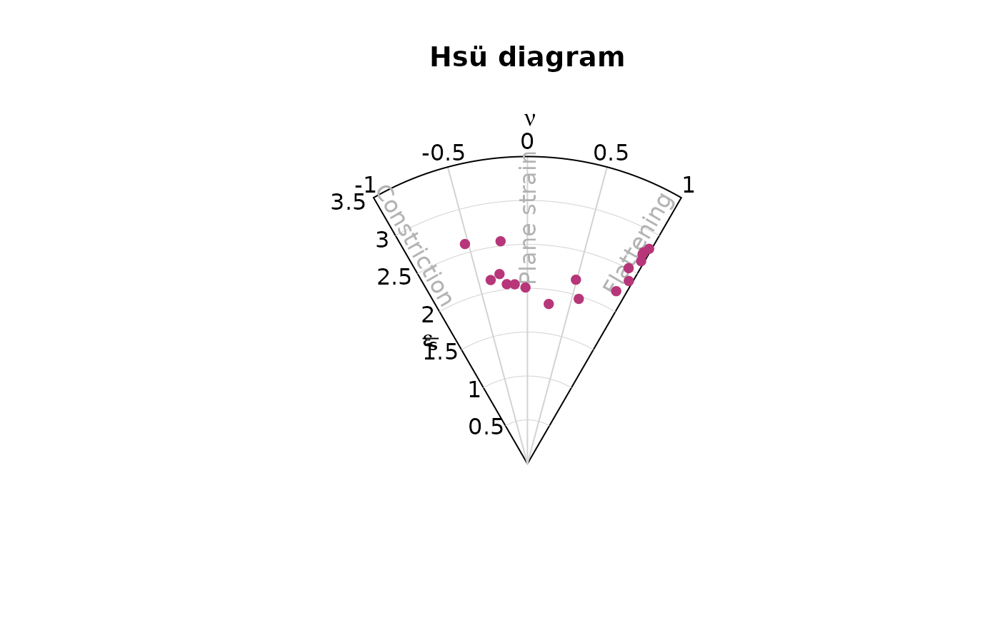
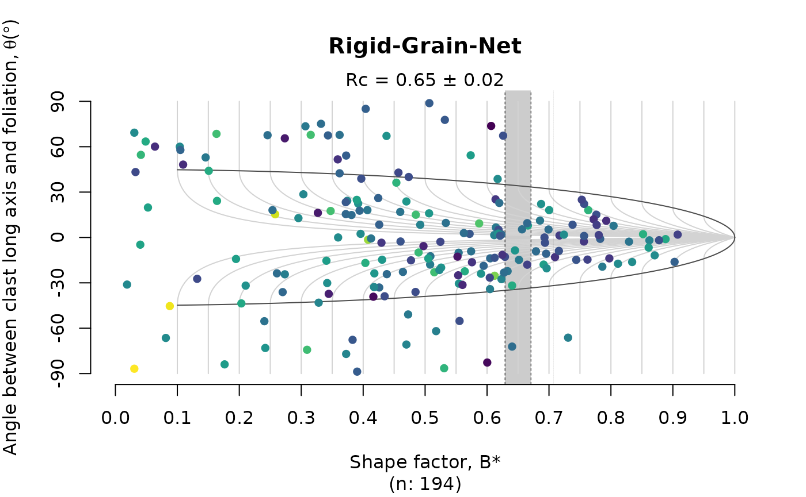

8. Strain and Vorticity Analysis
Tobias Stephan
2025-10-22
Source:vignettes/H_Strain_Analysis.Rmd
H_Strain_Analysis.RmdStrain analysis (fabric analysis)
Import some R-phi data from elliptical strain markers
data(ramsay)
head(ramsay)
#> R phi
#> [1,] 1.24 35.96
#> [2,] 1.52 27.59
#> [3,] 1.33 36.91
#> [4,] 1.78 27.31
#> [5,] 1.51 17.73
#> [6,] 1.70 24.45The mean mean strain ellipse (shape and orientation) of deformed elliptical objects as strain markers can be calculated by using the mean shape matrix and its eigenvalues (Shimamoto and Ikeda, 1976):
ramsay_mean <- mean_strain_ellipse(r = ramsay[, 1], phi = ramsay[, 2])
print(ramsay_mean)
#> $R
#> [1] 1.628138
#>
#> $phi
#> [1] 25.73632
#>
#> $R_CI
#> [1] 1.59275 1.66359
#>
#> $phi_CI
#> [1] 24.71905 26.75180The {structr} algorithm also calculates bootstrapped 95% confidence interval.
To visualize the distribution of the strain values, we can calculate densities in Rf-Phi space and plot them in a Rf/phi diagram:
Rphi_plot(r = ramsay[, 1], phi = ramsay[, 2])
or in an Equidistant polar plot:
Rphi_polar_plot(ramsay[, 1], ramsay[, 2], proj = "eqd")
3D Strain
Three-dimensional strain data are expressed by the ratio of the magnitudes of the 3 principal strain axes of the strain ellipsoid, . They can be represented in the Flinn diagram (linear of logarithmic axes)…
data("holst")
R_XY <- holst[, "R_XY"]
R_YZ <- holst[, "R_YZ"]
flinn_plot(R_XY, R_YZ, log = TRUE, col = "#B63679", pch = 16)
or the Hsü diagram using the natural octahedral unit strain and the Lode parameter
hsu_plot(R_XY, R_YZ, col = "#B63679", pch = 16)
Vorticity analysis
The rigid grain net after (Jessup et al. 2007) plots
the distribution the strain ratio (R) of orientation
(phi) of porphyroclast over the theoretical distribution of
tailless clasts. The plot estimates the critical threshold
Rc marking the transition between the stable-sink position
and infinitely rotating porphyroclasts. This threshold can be
interpreted as the the mean kinematic vorticity number.
Here the Rc is estimated using the bootstrap method
described in Stephan et al. (2025).
# assuming the mean orientation resembles the foliation
theta <- tectonicr::circular_mean(ramsay[, 2]) - ramsay[, 2]
RGN_plot(r = ramsay[, 1], theta = theta, col = "#B63679")
title(main = "Rigid Grain Net")